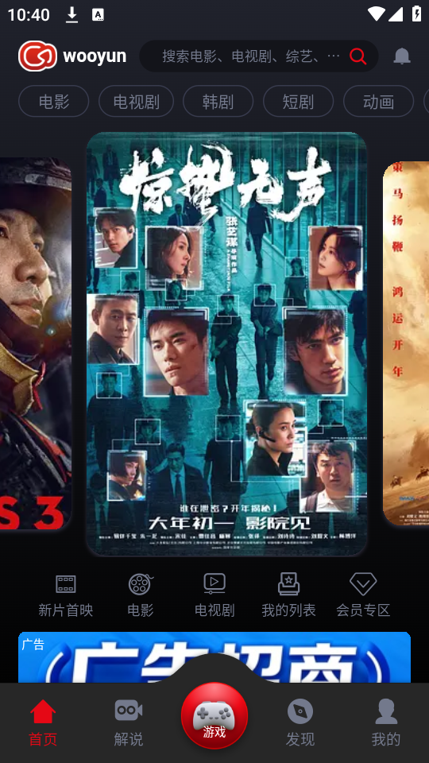
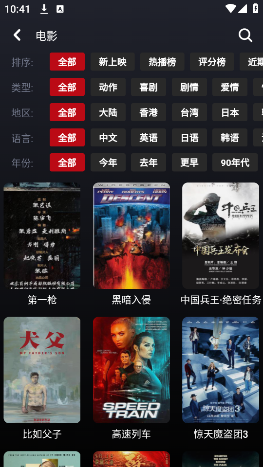

从零开始用 wooyun：一个追剧小白的五分钟入门
完全不懂也没关系，这篇文章带你从下载安装到第一次投屏、批量下载、创作者检索，把 wooyun 三个最值得新手先碰的功能玩明白。
这篇能带你从完全不懂到用起来——不需要任何基础，跟着做就行。
它到底是干嘛的
你可以把 wooyun官网 想象成一个超级片库。平时想看个电影、追部剧、补个老番，打开它搜一下，大部分都能找到。它聚合了公开渠道的影视资源，一个 App 覆盖电视剧、电影、动漫、综艺，不用在好几个应用之间来回切换。
简单说就是：一个地方搜片、一个地方看片、一个地方存片。

五分钟上手：从下载到第一次看片
别紧张，真的只要五分钟。
第一步：下载安装
先从官方下载拿到安装包就行。安卓手机的用户找到安装包下载安装，全程默认选项点确定就好，不需要 Root，也不用额外设置什么。
第二步：打开 App，逛一圈首页
打开之后你会看到一个分类清晰的首页——最新热播、热门推荐、分类入口，往下滑就能刷到想看的东西。分类栏一般会有电视剧、电影、动漫、综艺几个大项，点进去可以按类型、地区、年份继续筛选。

第三步：搜一部片，点进去播放
如果你已经知道想看什么，直接在顶部搜索框输入名字就行。搜出来点进去详情页，里面有剧集列表、评分、简介。随便点一集，播放器就自动开始了——画质一般默认 1080P，网络好的话可以手动切 4K。
到这里，你已经把 wooyun 跑通了。
上手后先玩这三个功能
别急着卸载，三个新手最值得先碰的功能，每一个都能显著提升追剧体验。
功能一：投屏到投影仪或电视
想象一下，手机上看 6 英寸的画面和投影到墙上 100 英寸的感觉，完全是两回事。
怎么操作：把手机和投影仪（或电视）连到同一个 WiFi，然后在 wooyun 播放页面的右上角点那个投屏小图标，搜到你的投影仪设备，选中就行。第一次投屏可能要等几秒配对，之后每次都是一键连接。
你会看到什么：画面和声音直接出现在大屏上，手机变成了遥控器，可以继续用别的 App 或者锁屏，不影响投屏。
这意味着什么：在家就能凑出一个家庭影院。不需要买会员、不需要接 HDMI 线，就是手机点一下的事。预算够的话再加个回音壁，效果不比电影院差。

功能二：批量下载全集，长途旅行必备
一部 40 集的国产剧，逐集点下载要点 40 次——别傻了，wooyun 有一键下载全集。
怎么操作：打开电视剧详情页，找「下载全集」按钮，选一个画质（下载后不能改，所以想清楚再选），确认之后就可以把 App 切到后台干别的了，下载会自动排队进行。进度随时可以在「我的 → 离线缓存」里看。
你会看到什么：下载完成后，离线缓存里整整齐齐排着所有集数，按顺序编号。
这意味着什么：飞机上没网、高铁上信号差、回老家的路上想追剧，掏出手机就能看，完全不依赖网络。出发前一两天下载好就行，不用等到上车才着急。
功能三：创作者检索——喜欢一个演员，看遍他所有作品
这个功能很多人第一次用都会惊呼「原来还能这样」。
怎么操作：直接在搜索框里输入演员名或导演名，比如「诺兰」「周迅」「宫崎骏」，搜索结果会自动识别这是人名，然后把这个人参与的全部影视作品列出来——主演的排在前面，客串的在后面，连综艺和声音出演都能搜到。
你会看到什么：一个创作者的完整作品清单，支持按类型、年份进一步筛选。
这意味着什么：喜欢了张艺谋的《影》？不用一部一部搜他的其他作品，搜「张艺谋」就全出来了，按顺序补片就行。对克里斯托弗·诺兰的烧脑叙事着迷？搜一下，从《追随》到《奥本海默》整个导演生涯一目了然。创作者检索还有一些局限性和别名匹配的小技巧，在 wooyun文档 里讲得更详细。
小白的三个常见疑问
存储空间不够怎么办
wooyun 默认把下载的缓存存在手机内部存储，但可以在设置 → 存储 → 缓存路径里切换到 SD 卡或者 USB OTG 外接存储。注意两点：一是切换不会自动迁移已有缓存，老内容得手动删了重下；二是选定一个路径就尽量固定，别频繁切换，不然缓存散在不同位置会很混乱。
搜不到演员或导演怎么办
很多创作者有多个名字——张国荣本名张发宗，英文名 Leslie Cheung；非中文创作者的译名也可能不统一（「克里斯托弗·诺兰」和简称「诺兰」都可以试试）。搜不到就换个拼写方式试试，中文不行换英文简称，大概率能命中。
批量下载有一两集失败
这挺正常的，40 集里有一两集源文件可能有问题。wooyun 的批量下载是一个队列，失败的集会在离线缓存里标记为「下载失败」，你单独点一下那集重新下载就行，不用全部重来。
结语
wooyun 不是什么复杂的工具，它的定位很清晰——就是让你追剧这件事变得简单。从五分钟上手到三个进阶功能，再到小白疑问的排查，你已经具备了用它解决大部分追剧场景的能力。
如果想深入玩法，比如投屏画质怎么调最优、批量下载前怎么估算存储空间，也可以翻一翻 wooyun 的文档。那边有更细的参数说明和场景攻略，是进阶玩家的好帮手。
最后说一句，wooyun 相关的资料和内容同步维护在三个代码仓库里，GitHub 上能看到最全的资源整理，Gitee 对国内访问更友好，GitCode 也有一份备份，三个地方选哪个方便用哪个就行。